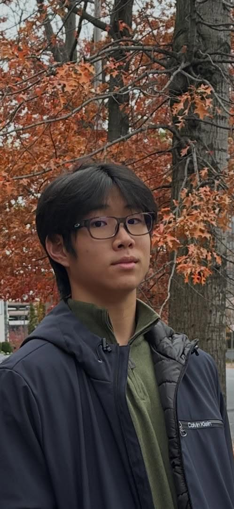
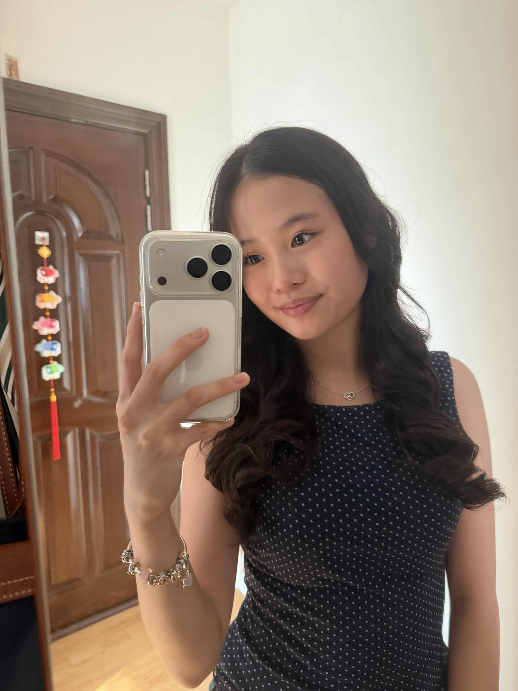
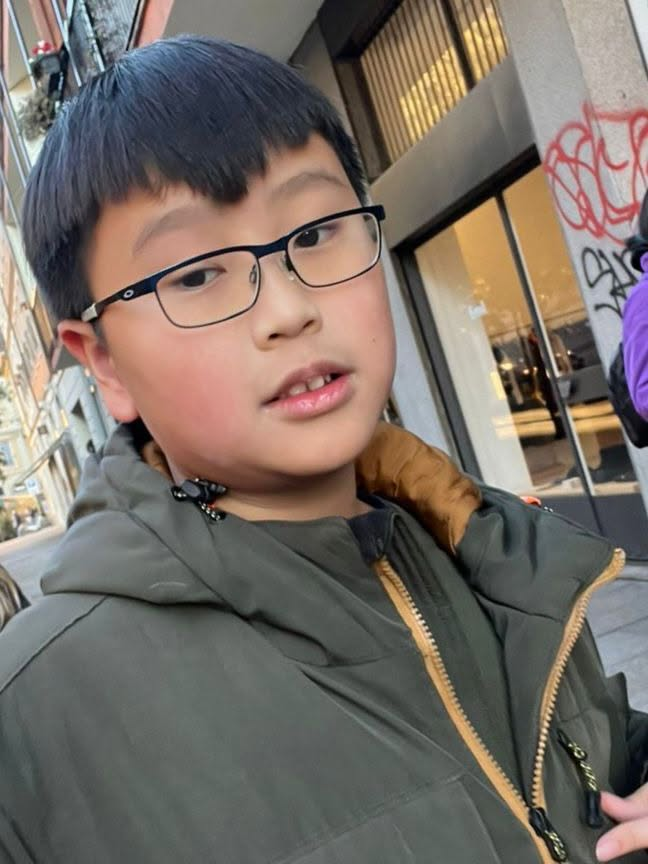
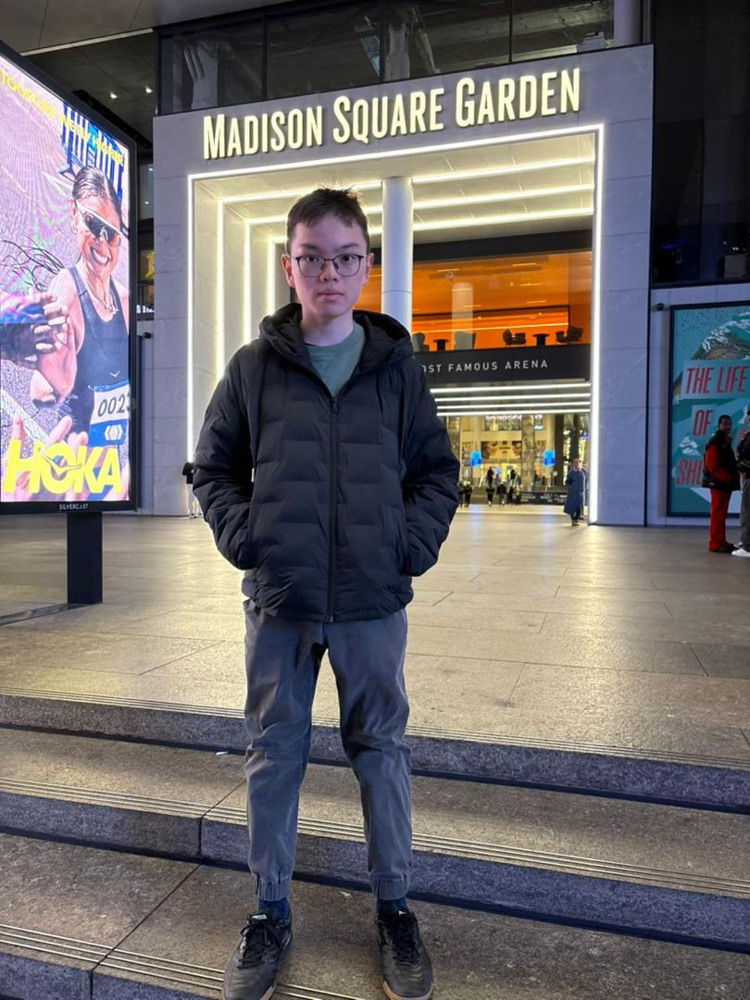
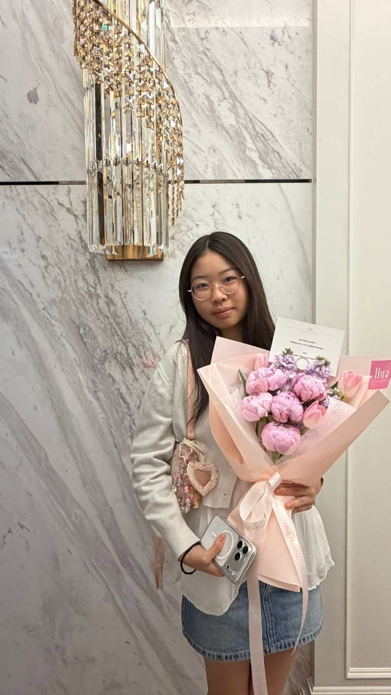
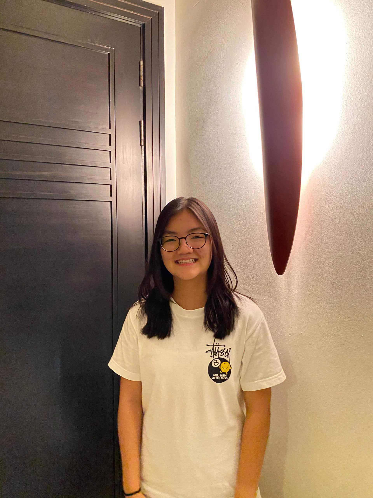

About Our Society
Who We Are
Advocate for Autism was founded on the belief that real change starts with structural advocacy and empathetic community action. We work tirelessly to remove societal stigmas, offering a safe space where individuals on the autism spectrum are recognized, respected, and fully supported.
Through our localized educational frameworks, regular awareness programs, and direct public engagement, we hope to establish sustainable support grids across neighborhoods and campuses alike.
Our Executive Committee
The dedicated team directing strategies, operations, and programs for our NGO.
Jin Yang
Executive Director (President)Hi, I am Jin Yang, a biology enthusiast and autism researcher dedicated to improving the lives of autistic individuals. I established this organization to foster a welcoming environment, provide essential resources, and promote acceptance and inclusion for autistic individuals.

Daniel
Vice President (Operations Lead)A student with a passion for debating, Daniel enjoys asking questions, learning about the world, and engaging in meaningful discussion. Through his work at AFA, he hopes to promote greater understanding, inclusion, and support for neurodivergent individuals.

Ayleen
Secretary (Administration & Documentation)Hi! My name is Ayleen and my hobbies are playing piano and baking. I’m currently working on a research paper and looking into biology related stuff in hopes of studying medicine in the future. I joined AFA because I wanted to expand my knowledge on different areas of possible medical fields.

Owen
Treasurer (Finance Manager)Owen is a 16 year old student who enjoys swimming, playing the piano and casual gaming in his leisure times. Fueled by his interest for economics and financial markets, Owen strives to provide the right resources for the AFA to empower every voice and support every journey.

Jayden
Outreach & Partnerships DirectorOccasional reader, 100% sports larper.

Amber
Deputy Event DirectorHi I’m Amber and I’m eager to learn about how people think and behave in the way they do. I also enjoy dancing and eating Dubai chewy cookies.

Abby
Deputy Social Media DirectorHi! I’m Abby. Besides my academic interests in STEM, I am passionate about sports, music, and service. Through AFA, I am incredibly grateful to work alongside compassionate individuals and contribute meaningfully to our communities.